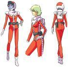

天田士郎： 担任地球联邦军东南亚战区机械化混合大队第08MS小队的队长，所驾驶的机体是RB-79铁球的先行量产型，是随宇宙艇一起配备给部队的。天田士郎自己在就任前与吉翁军官，爱娜·萨哈林互相心生好感，不久在战斗中再会。以确认彼此的想法为契机，开始对理应相互理解却互相残杀的人们的战争本身开始产生了疑问。为了找到战斗的意义和对爱娜的爱的回答，属于天田士郎的个人的战争开始了。

爱娜·萨哈林： 爱娜·萨哈林，是《机动战士高达第08MS小队》中的女主角。 吉恩军的测试驾驶员，名门萨哈林家的千金，但她并非吉恩军的正规军人。她为了哥哥坚尼亚斯．萨哈林复兴萨哈林家族，驾驶的便是其兄坚尼亚斯开发中的试作MA【アプサラス】，在一次战斗中偶然地遇上了联邦军士官，西罗·阿马达而改变了她的命运，战争结束后，她和西罗·阿马达一起失踪。 宇宙世纪五十九年，出生为SIDE3的富商名门萨哈林家之长女。从小就很活泼的爱娜很喜欢和年长七岁的哥哥基尼亚斯一起玩，经常跟在他身边。但宇宙世纪六十四年的宇宙港爆破恐怖活动改变了她的命运。对于只有自己得救一事感到有责任的她，决心成为身患重病的哥哥的手脚。从此失去笑容的变得像人偶一样面无表情。根据某种说法，在军官学校时似乎被称为“NOFACE DOLL”。 宇宙世纪七十九年一年战争爆发后，爱娜被提拔为“阿布萨拉斯计划”的成员，每日不断地训练。同年十月，至今压抑这一切情感的爱娜内心有了变化。 她和交战的地球联邦军军人西罗·阿马达一起在宇宙中遇难，但两人合力度过了这次危机。之后再次发生了偶遇，她与士郎再次相会。在雪山遇难时也是以两人的力量度过。而后，爱上士郎的她不再当哥哥的人偶，开始摸索着自己的战斗。 同年十二月，地球联邦军进攻了她所驻留的拉萨基地。恢复善良心地的爱娜，在战场上与联邦方面交涉不对搭乘伤病士兵的舰艇进行攻击，但却失败了，同行的哥哥基尼亚斯也要杀害她。 而解救了这个危机的也是从敌军逃脱出来的士郎，爱娜也下定决心要和他一起对抗哥哥，并亲手结束了命运的诅咒。之后，据说和士郎一起从军队逃脱的爱娜改了姓名，成为一个小孩的母亲而在地球生活着。